Historia Económica de Colombia · Historia familiar
Por el río Meta, donde no llegaba la carretera
La navegación y el comercio del río Meta entre 1940 y 1970, contados desde la historia de mi abuelo, Abel Rey, navegante y comerciante de Puerto López.
Sarah Lucía Vivas · 2026-2
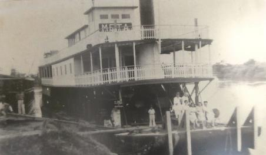
Vapor Meta, c. 1920. Fondo FAFO, reproducido en Ardila Luna (2018, p. 201, Imagen 32).
Abel Rey y el río
Abel Rey (1931–2022) pasó su juventud y su vida adulta navegando el río Meta. No venía de una familia de navegantes. Sus padres y abuelos habían llegado a los Llanos desplazados por la violencia bipartidista, por ser liberales, y se asentaron en un caserío cerca de Villavicencio que su padre, también Abel Rey, y Clemente Naranjo llamaron Puerto López en honor al presidente Alfonso López Pumarejo (Alcaldía de Puerto López, 2025). Allí el hijo dejó la primaria y empezó a recorrer el río.
Cada fin de año Abel se reunía en Villavicencio con comerciantes y dueños de caseríos y haciendas. Compraba mercancía al por mayor y anotaba los encargos. En febrero cargaba el bote y salía en un viaje de unos seis meses río abajo, hasta Orocué, La Hermosa, Guachiría, el Cravo Norte, el Cravo Sur y a veces Venezuela, entregando pedidos en caseríos, resguardos indígenas y haciendas. Llevaba de todo, incluso vestidos de novia y ataúdes (Flor Alba Garzón, comunicación personal, 20 de septiembre de 2026).
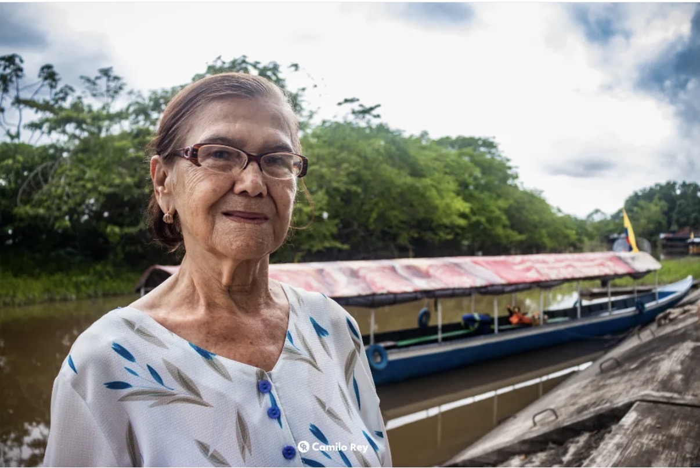
Mi abuela, Flor Alba Garzón, en el río. Su testimonio es la fuente principal de este trabajo. Foto: Camilo Rey.
¿Por qué, a mediados del siglo XX, un ataúd o un vestido de novia solo llegaba a un caserío del Meta si alguien lo traía por el río?
Este sitio responde esa pregunta en tres partes. La primera mira el río en el siglo XX y cómo cambiaron sus dinámicas frente a la carretera y la violencia. La segunda recorre los pueblos navegantes, empezando por Puerto López. La tercera describe la navegación misma: qué se comerciaba, quién lo hacía y cómo convivían el circuito formal del Estado, con la NAVENAL, y el circuito informal de navegantes como Abel.
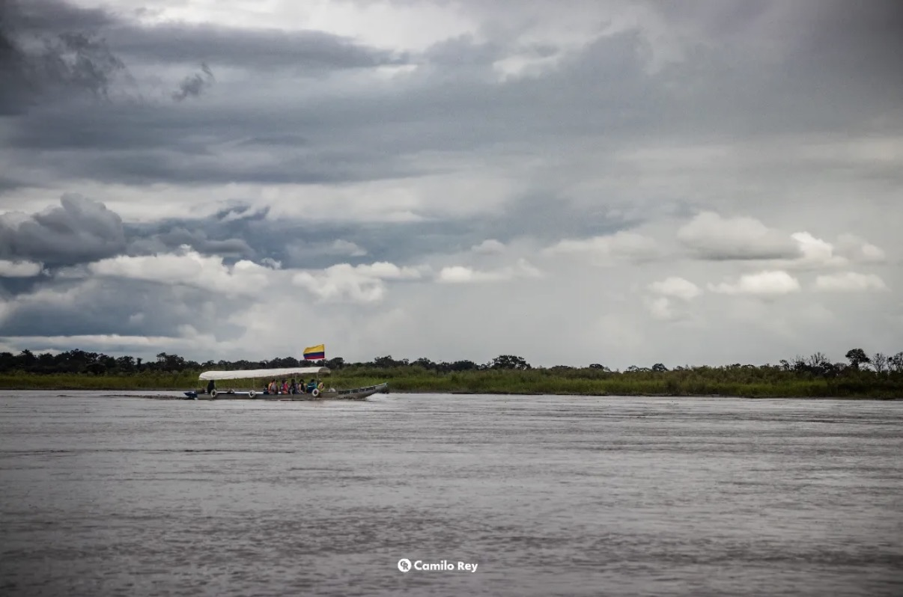
El río Meta. Foto: Camilo Rey.
I.
El río que atraviesa la región
El Meta nace de la unión de varios ríos del piedemonte. El Humadea y el Guayuriba forman el Metica, que pasa frente a Puerto López, y río abajo, cerca de Cabuyaro, el Metica se une al Humea y nace el Meta, que corre hacia el nororiente hasta desembocar en el Orinoco en Puerto Carreño (Ardila Luna, 2018, p. 24). Es navegable unos ocho meses al año, en la temporada de lluvias. En invierno los barcos llegaban hasta Puerto López y en verano solo hasta Cabuyaro (p. 31).
Desde la Colonia, los Llanos quedaron aislados del centro del país por la cordillera y por la debilidad de las comunicaciones, y se consolidaron como llanuras ganaderas con muy poca población (Safford y Palacios, 2002, pp. 39, 44). En esa región el río era la vía de integración.
El río Meta, de Puerto López a Puerto Carreño
Toque un círculo para ver su nota
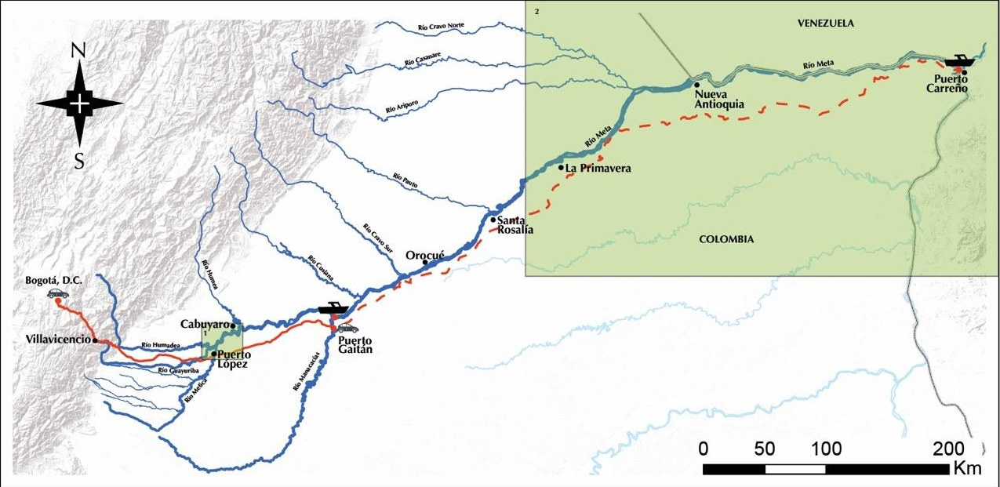
Puerto López Base de Abel Rey. Puerto sobre el río Metica, el punto navegable más alto y más cercano a Bogotá (Ardila Luna, 2018, p. 130).
Recorrido de AbelOtros puertosMercado
Por ubicar: La Hermosa y Guachiría, mencionados por Flor Alba Garzón, y los puntos exactos de comercio sobre el Cravo Sur y el Cravo Norte. Los ubicaré con las próximas entrevistas y cartografía de la época.
Mapa base: «Mapa No. 2. Puertos sobre el río Meta», elaborado en ArcGIS por Carolina Ardila y finalizado en Illustrator por Miguel Acosta (Ardila Luna, 2018, p. 29). Las carreteras del mapa son las actuales. Capa interactiva de elaboración propia, con las paradas según la entrevista a Flor Alba Garzón (2026).
Hitos del Meta en el siglo XX
La navegación del Meta no avanzó en línea recta. Tuvo una caída después de la Guerra de los Mil Días y la crisis de 1929, una reactivación estatal en los años cuarenta y una competencia creciente con la carretera.
1899–1902Violencia · río
La Guerra de los Mil Días inicia la decadencia de la navegación comercial en el Meta. Llegan a los Llanos colonos liberales que buscan refugio. Ardila-Luna, 2022, p. 75; Ospina Ovalle, 2021, p. 57
Década de 1930Río
Tras 1929 la navegación comercial se suspende. Es el vacío que llenan navegantes independientes. Ardila-Luna, 2022, p. 75; Ardila Luna, 2018, p. 109
1935Puerto López
Abel Rey (padre) y Clemente Naranjo bautizan el caserío como Puerto López, según la Alcaldía. Alcaldía de Puerto López, 2025
1936Carretera
Se abre la carretera Bogotá–Villavicencio, que según se decía solucionaría el alto costo y la escasez de alimentos. No llega a la llanura profunda. Alvear Sanín, 2008, p. 318
1944Estado
El gobierno de López Pumarejo crea la Compañía Nacional de Navegación, NAVENAL, para integrar las fronteras fluviales con el Caribe. Ardila Luna, 2018, p. 109
1948Estado · río
NAVENAL empieza a operar en el Meta con remolcadores y buques traídos de Barranquilla y adaptados en Puerto López. Ardila Luna, 2018, pp. 31, 109
1949–1953Violencia
Las guerrillas liberales del Llano se ubican a la orilla de los ríos navegables y se comunican en canoas con motor y lanchas de poco calado. Ospina Ovalle, 2021, p. 173
Década de 1950Comercio
Colonos y llaneros crean empresas privadas de navegación que llevan ganado, yuca y plátano hacia Bogotá y traen maquinaria, sal y víveres. Ardila Luna, 2018, p. 109
1955Puerto López
Puerto López se erige como municipio. Ardila Luna, 2018, p. 131, con base en Torres Torres, 1987
1960–1970Comercio
Aumenta el transporte de ganado por el río. Las reses llegan a Puerto López, engordan unas semanas y siguen en camión a Bogotá. Ardila Luna, 2018, p. 47
Década de 1970Carretera
Todavía se busca financiación para ampliar y recuperar el tramo Villavicencio–Puerto López. Alvear Sanín, 2008, p. 399
1984Epílogo
NAVENAL es liquidada por problemas de presupuesto y administración. Ardila Luna, 2018, p. 109
El país se pasa a la carretera; el Llano sigue en el río
Mientras el Meta vivía su reactivación, el resto de Colombia apostaba por las carreteras. Entre 1932 y 1948 la red nacional casi se cuadruplicó. Pero en 1947 los ríos todavía movían más de una cuarta parte de la carga del país, y el principal, el Magdalena, se recuperó de la crisis de los treinta hasta su máximo en 1956.
Carreteras nacionales, km
1932–1948
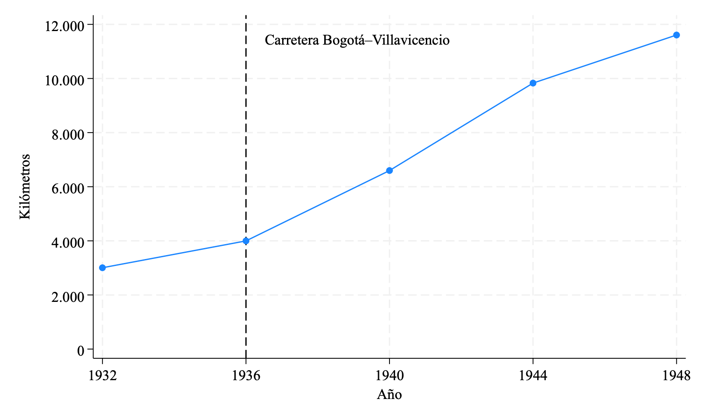
Fuente: Alvear Sanín (2008), Tabla 35, con base en Barnhart. La línea vertical marca la apertura de la carretera Bogotá–Villavicencio (1936).
Carga por modo de transporte
1947, % de ton-km
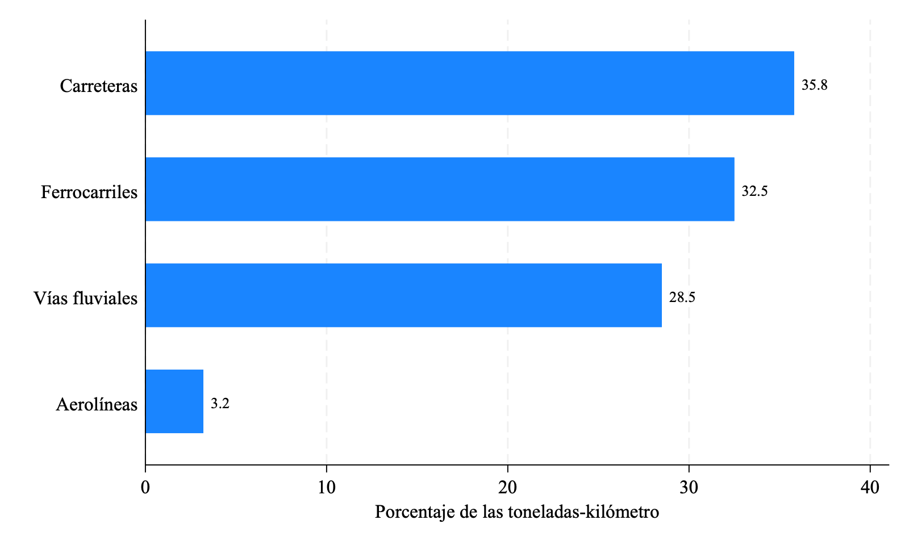
Fuente: Alvear Sanín (2008), Tabla 38, con base en la misión Currie.
Carga transportada por el río Magdalena, toneladas
Referencia nacional · 1915–1956
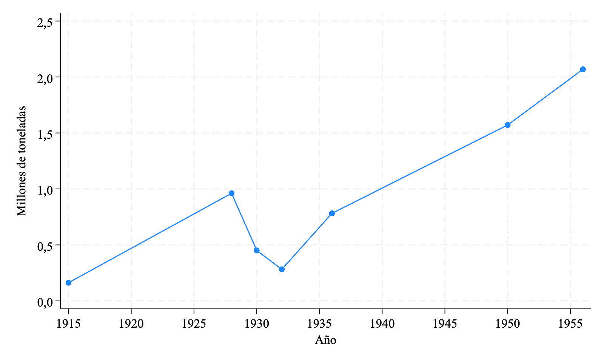
Fuente: cifras puntuales en Alvear Sanín (2008, §56 y capítulo sobre el Magdalena). Es una serie incompleta y sirve como referencia del ciclo fluvial nacional mientras consigo cifras propias del Meta (ver «Fuentes y datos»).
II.
Pueblos navegantes
A lo largo del Meta se formó una cadena de pueblos que nacieron con el río y vivían de la pesca, la navegación y el comercio. Entre 1938 y 1964 la población del Meta se triplicó, y el crecimiento se aceleró después de 1951, en los años de la Violencia y de la colonización de la llanura.
Población según los censos
Habitantes
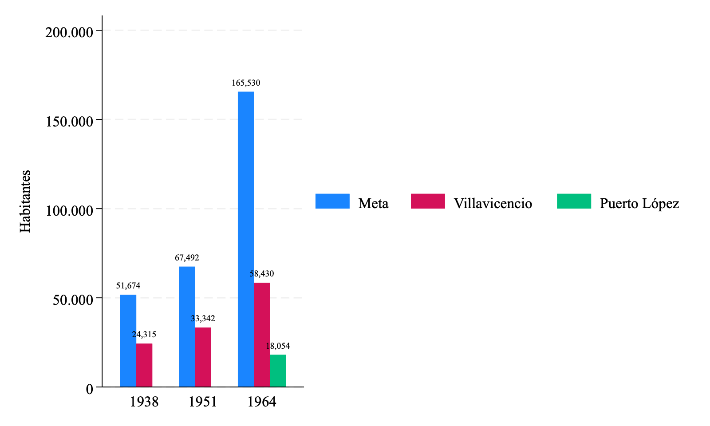
Fuente: elaboración propia con los Censos de Población de 1938 (Tomo XVI), 1951 y 1964 (Resumen del Meta). En 1938 y 1951 Puerto López no figuraba como municipio.
2,1%crecimiento anual del Meta, 1938–1951
7,0%crecimiento anual del Meta, 1951–1964
En 1964, nueve años después de volverse municipio, Puerto López ya era el segundo municipio más poblado del Meta, con 18.054 habitantes, después de Villavicencio. Ocho de cada diez vivían fuera del casco urbano, frente a dos de cada diez en Villavicencio.
Tasas calculadas como crecimiento geométrico entre las fechas censales (5 de julio de 1938, 9 de mayo de 1951 y 15 de julio de 1964).
El Puerto
Puerto López
Puerto López se fundó donde el caño Banderas cae al río Metica, a unos 83 km de Villavicencio. Era el punto navegable más alto del río y el más cercano a Bogotá, y se dice que fue el primer puerto fluvial sobre el Meta. En los Llanos le dicen simplemente El Puerto (Ardila Luna, 2018, p. 130).
Sus colonos fundadores llegaron de Cundinamarca, Boyacá, Tolima y el Casanare. Trabajaron primero en el ganado de las haciendas cercanas y en conucos, pero «rápidamente los hombres se integraron a la navegación y la pesca, que al poco tiempo serían las actividades más importantes del pueblo» (p. 131). Fue en ese pueblo donde mi abuelo creció y se volvió navegante.
La fecha de fundación cambia según la fuente, y esa diferencia es parte de la historia que quiero contar:
1935
Abel Rey y Clemente Naranjo bautizan el caserío como Puerto López (Alcaldía de Puerto López, 2025).
1937
El Estado compra parte de la hacienda La Yacuana y funda un corregimiento con ese nombre.
1946
Corregimiento de Puerto Alfonso López.
1955
Municipio (Ardila Luna, 2018, pp. 130–131, con base en Torres Torres, 1987).
En 1948 NAVENAL adaptó en Puerto López los buques con los que empezó a navegar el Meta, y en las décadas siguientes el pueblo fue el punto de transbordo entre el río y la carretera (Ardila Luna, 2018, pp. 31, 47).
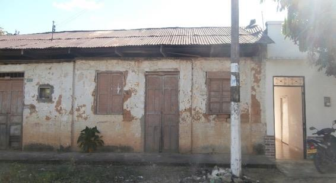
Casa de bahareque de colonos fundadores, barrio Abel Rey, Puerto López. Foto: C. Ardila Luna, 2016 (Ardila Luna, 2018, p. 131, Imagen 21). El barrio lleva el nombre de mi bisabuelo.
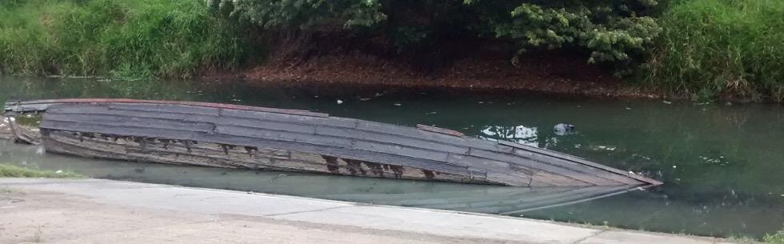
Puerto Banderas, Puerto López (Ardila Luna, 2018, p. 124, Imagen 20).
Municipios del Meta en 1964
Cabecera y resto
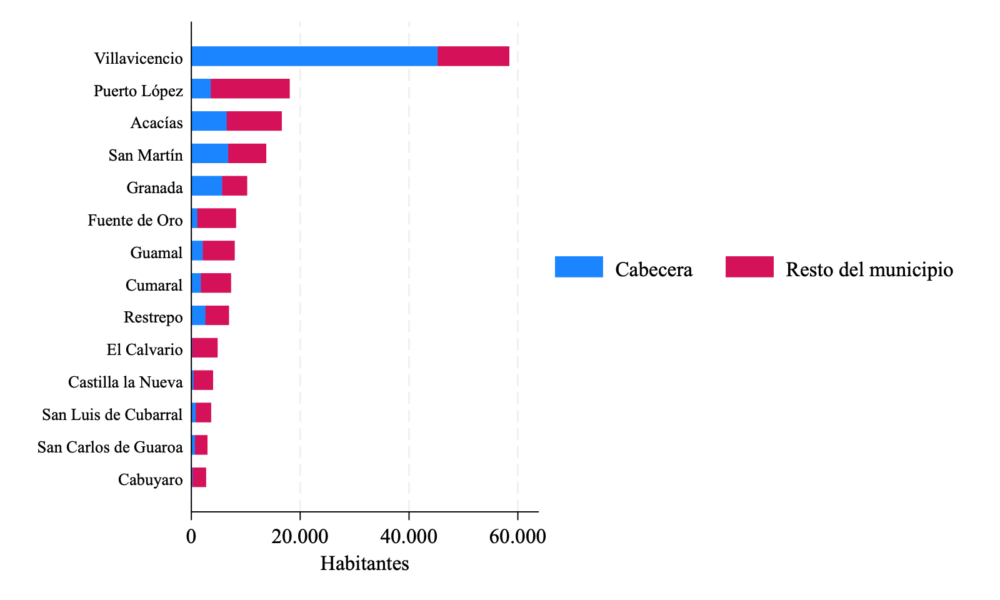
Fuente: elaboración propia con el XIII Censo de Población 1964, Resumen del Meta, Cuadro 5. Transcripción preliminar; la suma de municipios coincide con el total departamental (165.530).
Puerto López en 1964: hombres y mujeres por edad
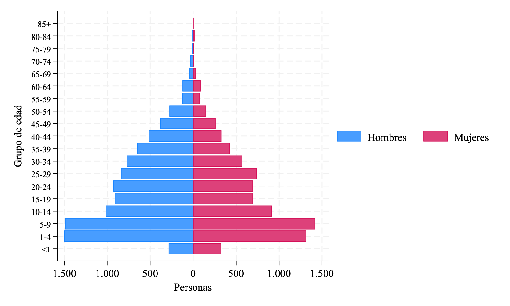
Fuente: elaboración propia con el Censo de 1964, Cuadro 5, p. 28. Hay 123 hombres por cada 100 mujeres (Meta: 119; Villavicencio: 107). En los grupos de 35 a 44 y de 50 a 54 años supera los 150. Es el perfil de un pueblo de colonización y de oficios masculinos como la navegación.
Cabuyaro
Antiguo Puerto Barrigón
Está a 25 km de Puerto López, sobre el Meta. Era el puerto de verano: cuando bajaba el agua, la carga llegaba hasta aquí y seguía en embarcaciones más pequeñas por el Upía o el Humea (Ardila Luna, 2018, p. 31). En 1964 tenía 2.695 habitantes, el 90% en zona rural.
Orocué
Casanare
Era una de las paradas del recorrido de Abel. Fue uno de los puertos históricos del Meta, con casas como la Casa de la Playa, de 1921, y todavía es centro de mercado para los pueblos río abajo, que traen productos desde aquí en chalanas (Ardila Luna, 2018).
Puerto Carreño
Vichada · frontera
Aquí el Meta desemboca en el Orinoco y empieza Venezuela, a donde a veces llegaba Abel. Desde los años cincuenta las empresas fluviales mantienen un comercio constante entre Villavicencio, Puerto López y Puerto Carreño (Ardila Luna, 2018, p. 32).
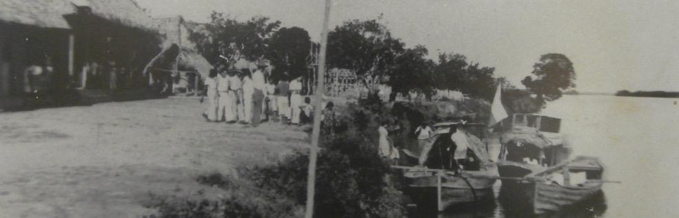
Casa de la Playa en Orocué, 1921. Fondo FAFO (Ardila Luna, 2018, p. 197, Imagen 30).
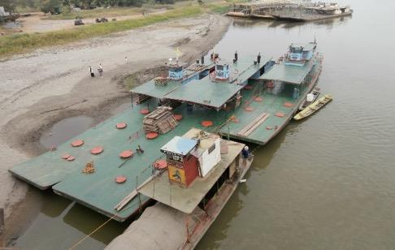
Botemotores en el puerto del Puente Carlos Lleras, Puerto López (Ardila Luna, 2018, p. 141, Imagen 23).
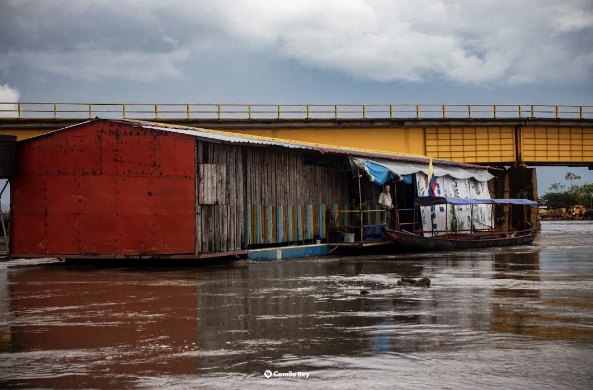
Casa flotante y canoas bajo un puente sobre el río. Foto: Camilo Rey.
En construcción: fotografías y cartas del archivo familiar para esta sección.
III.
La navegación: dos circuitos sobre el mismo río
Entre 1940 y 1970 circulaban por el Meta dos tipos de comercio. Uno era formal, liderado por el Estado a través de NAVENAL, que llegó a tener ocho embarcaciones en el Meta, un buque y siete convoyes, para pasajeros y mercancías. Uno de sus convenios más importantes fue el transporte de sal para los ganaderos con el IDEMA (Ardila Luna, 2018, p. 109). Según Ardila-Luna (2022, p. 76), navegaba «principalmente con el transporte de insumos para el ganado y los cultivos».
El otro era informal. Lo sostenían navegantes independientes como Abel, que no estaban vinculados a NAVENAL y trabajaban con encargos de voz a voz. Abel abastecía el consumo de los caseríos y resguardos a los que no llegaban ni el Estado ni la carretera.
Manifiesto comparado · río Meta, c. 1948–1970
Aspecto
Circuito formal: NAVENAL
Circuito informal: Abel Rey
Operador
Empresa estatal, creada en 1944; en el Meta desde 1948
Navegante independiente con base en Puerto López
Embarcaciones
Un buque y siete convoyes; remolcadores traídos de Barranquilla
Un bote propio
Carga
Sal e insumos para el ganado y los cultivos; pasajeros
Víveres y mercancía al por mayor, encargos particulares, vestidos de novia, ataúdes
Clientes
Grandes haciendas ganaderas; convenio con el IDEMA
Caseríos, resguardos indígenas y haciendas remotas
Cómo se pedía
Contratos y tarifas de la empresa
Voz a voz; pedidos anotados en Villavicencio a fin de año
Recorrido
Puerto López – Puerto Carreño
Puerto López hasta Orocué, La Hermosa, Guachiría, el Cravo Norte, el Cravo Sur y a veces Venezuela
Fuentes
Ardila Luna (2018, pp. 31, 109); Ardila-Luna (2022, p. 76)
Flor Alba Garzón, comunicación personal (2026)
Elaboración propia. Pendiente: completar con Melendro Serna (1978) para NAVENAL y con nuevas entrevistas familiares para el circuito informal.
Las embarcaciones del río
En el Meta conviven embarcaciones de escalas muy distintas. Las canoas de madera, de tres a cuatro metros, sirven para la pesca y el transporte local. Las chalanas o bongos, de 15 a 50 metros, cargan entre 25 y 120 toneladas. Los botemotores y los convoyes, como los que usó NAVENAL, mueven cientos de toneladas (Ardila Luna, 2018, pp. 33–34). Falta confirmar en las entrevistas en qué tipo de embarcación viajaba Abel.
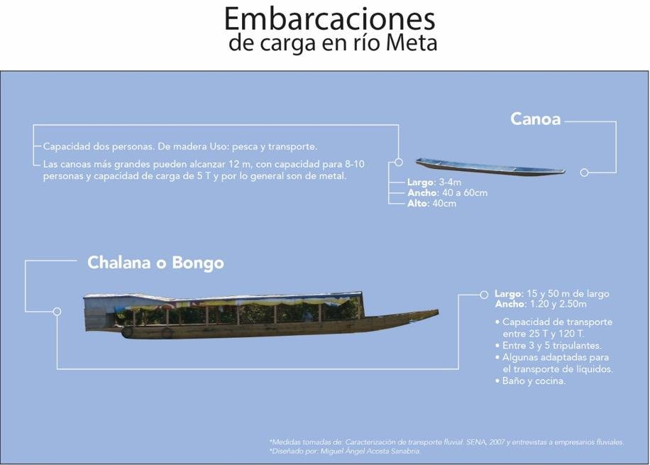
Canoa y chalana o bongo.
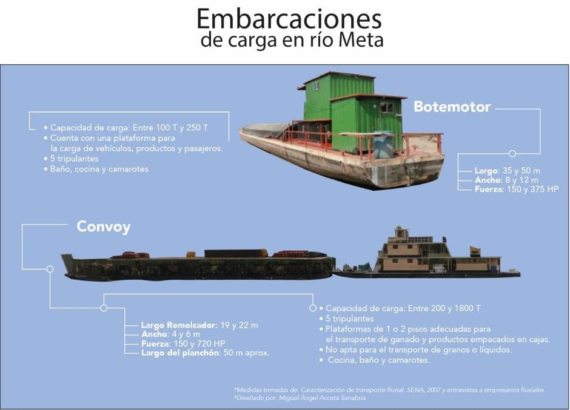
Botemotor y convoy.
«Embarcaciones de carga en río Meta». Diseño: Miguel Ángel Acosta Sandino; medidas tomadas de SENA (2007) y de entrevistas a empresarios fluviales. En Ardila Luna (2018, pp. 33–34).
El año de Abel frente al año del río
Calendario aproximado
enefebmarabrmayjunjulagosepoctnovdicRío navegable (lluvias)Ciclo de Abelsaleregresacompra
Temporada navegable: unos ocho meses en época de lluvias (Ardila Luna, 2018, p. 31); los meses marcados son una aproximación al invierno llanero. Ciclo de Abel: entrevista a Flor Alba Garzón. Abel salía en febrero, en pleno verano, con el río bajo. Puede que la fecha esté mal recordada, o puede que un bote pequeño sí pudiera navegar cuando los buques grandes no podían. Lo voy a contrastar en las próximas entrevistas.
Vehículos automotores por departamento
1960
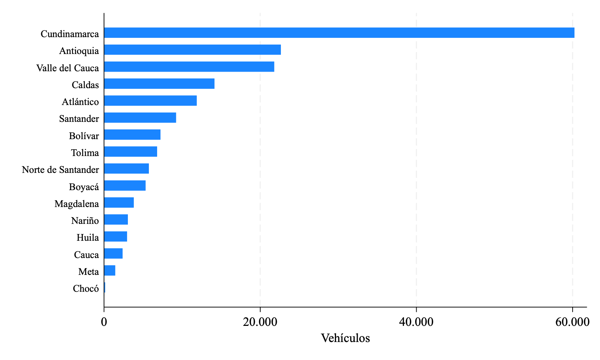
Fuente: Alvear Sanín (2008), Tabla 40, con base en el Anuario General de Estadística de 1960. Total nacional: 181.918 vehículos.
0,8%de los vehículos del país estaban en el Meta en 1960
Una década después de que NAVENAL llegara al Meta, el departamento tenía 1.429 vehículos, menos del 1% del país. En la mayor parte de la llanura no había carretera que usar. Donde la falta de vías reducía al mínimo la presencia del Estado (Ospina Ovalle, 2021, p. 153), el comercio por el río era la forma normal de abastecerse.
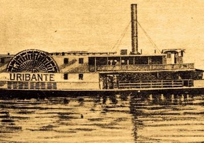
Vapores del Meta (Ardila Luna, 2018, p. 107, Imagen 18).
Fuentes y datos
De dónde viene lo que está aquí
Fuentes familiares
Mi abuelo falleció en 2022, así que su experiencia se reconstruye de forma indirecta. La fuente principal es una entrevista a Flor Alba Garzón, su esposa (20 de septiembre de 2026). Los testimonios orales tienen límites claros para fechar y ubicar los hechos, por eso los uso sobre todo para describir las dinámicas del comercio, las temporadas de viaje, los clientes y las mercancías, y los contrasto con la literatura y los datos.
Datos usados en este borrador
Serie
Origen
Variables
Cobertura
Tratamiento
Población del Meta y municipios
Censos de Población 1938 (Tomo XVI), 1951 y 1964 (Resumen del Meta), Contraloría y DANE
Población total, cabecera y resto; sexo; grupos de edad (1964)
Intendencia/Departamento del Meta y sus municipios
Transcripción propia de los cuadros escaneados; verificación de que los municipios sumen el total departamental; tasas de crecimiento geométrico entre fechas censales
Carreteras nacionales
Alvear Sanín (2008), Tabla 35 (Barnhart)
Kilómetros
Nacional, 1932–1948, cada 4 años
Transcripción
Carga por modo
Alvear Sanín (2008), Tabla 38 (misión Currie)
Ton-km y porcentaje
Nacional, 1947
Transcripción
Carga del Magdalena
Alvear Sanín (2008), cifras en el texto
Toneladas
Siete años entre 1915 y 1956
Recopilación de cifras sueltas; serie incompleta
Parque automotor
Alvear Sanín (2008), Tabla 40 (Anuario General de Estadística)
Vehículos
Departamentos, 1960
Transcripción
Mapa
Natural Earth; Ardila Luna (2018); entrevista familiar
Ríos, límites, puertos y paradas
Cuenca del Meta
Elaboración propia; Metica trazado a mano
Los archivos de datos están en la carpeta datos/ del sitio.
Lo que falta para la entrega final
Entrevistas a los hijos y familiares que acompañaron a Abel en sus viajes, y digitalización de fotos y cartas.
Una base de datos de testimonios: paradas, mercancías, clientes y épocas del año, codificadas a partir de las entrevistas.
El censo de 1973, para cerrar la serie de población de los pueblos navegantes.
Melendro Serna (1978), para las cifras de NAVENAL entre 1945 y 1972.
El Censo Agropecuario de 1960, para el ganado del Meta.
Una capa del mapa con los episodios de la guerrilla liberal sobre los ríos (Ospina Ovalle, 2021).
Bibliografía
Alcaldía de Puerto López. (2025). Pasado, presente y futuro. https://www.puertolopez-meta.gov.co/publicaciones/2275/pasado-presente-y-futuro/
Alvear Sanín, J. (2008). Historia del transporte y la infraestructura en Colombia (1492–2007). Ministerio de Transporte.
Ardila Luna, D. C. (2016). El río Meta y los proyectos para la integración de los Llanos Orientales colombianos, desde la Colonia hasta el siglo XXI. Anuario de Historia Regional y de las Fronteras, 21(2).
Ardila Luna, D. C. (2018). «El proyecto lo trajeron hecho». El proyecto de navegabilidad del río Meta en la vida con el río [Tesis doctoral, Universidad de los Andes].
Ardila-Luna, D. C. (2022). El río Meta en el proceso de fronterización de la frontera colombiana, 1532–2016. Agua y Territorio, (19), 67–80.
Contraloría General de la República. (1942). Censo General de Población, 5 de julio de 1938. Tomo XVI: Resumen general del país. Imprenta Nacional.
DANE. (1954). Censo de Población, 9 de mayo de 1951.
DANE. (1970). XIII Censo Nacional de Población y II de Edificios y Viviendas, 15 de julio de 1964. Resumen del Meta. Imprenta Nacional.
Mazzuca, S. y Robinson, J. A. (2006). Political conflict and power-sharing in the origins of modern Colombia (NBER Working Paper No. 12099).
Natural Earth. (s. f.). Rivers and lake centerlines; Admin 0 and Admin 1, 1:10m. naturalearthdata.com
Ospina Ovalle, C. A. (2021). Incendio en la llanura: surgimiento, auge y entrega de las guerrillas en los Llanos Orientales 1949–1953. Escuela Superior de Guerra; Planeta.
Quintero González, J. R., Ramírez Sosa, Y. A. y Cortázar Ávila, A. M. (2020). Transporte fluvial en Colombia. Revista Ciudades, Estados y Política, 7(1), 49–68.
Safford, F. y Palacios, M. (2002). Colombia: Fragmented land, divided society. Oxford University Press.
Serje, M. y Ardila Luna, D. C. (s. f.). El río como infraestructura: paisaje y navegación en el río Meta, Colombia.